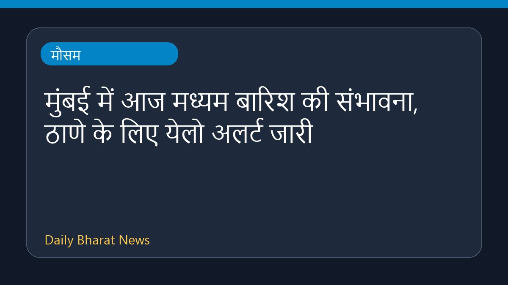
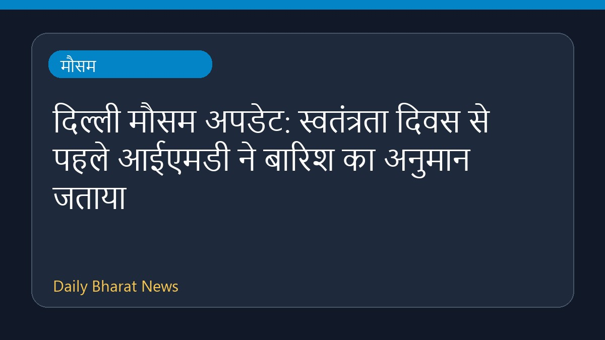
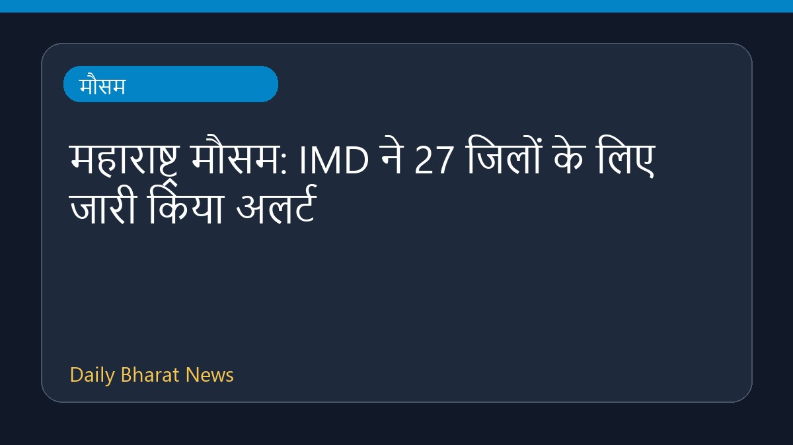

मुंबई में आज मध्यम बारिश की संभावना, ठाणे के लिए येलो अलर्ट जारी

मौसम समाचार स्रोतों के अनुसार, मुंबई में आज मध्यम बारिश होने की संभावना है। भारत मौसम विज्ञान विभाग (IMD) ने ठाणे जिले के लिए येलो अलर्ट जारी किया है। मौसम की स्थिति को ध्यान में रखते हुए संबंधित क्षेत्रों में सतर्कता बरती जा रही है। इस संबंध में विस्तृत जानकारी अभी सीमित है, लेकिन स्थानीय प्रशासन और नागरिक एजेंसियों द्वारा स्थिति पर नजर रखी जा रही है। नागरिकों को मौसम के मिजाज को देखते हुए आवश्यक सावधानी बरतने की सलाह दी जाती है।
मूल स्रोत: Weather News Sources
Mumbai weather: Moderate rain likely today, IMD issued yellow alert for Thane - Mid-Day ↗
Mumbai weather: Moderate rain likely today, IMD issued yellow alert for Thane - Mid-Day ↗
संबंधित खबरें

मौसमदिल्ली मौसम अपडेट: स्वतंत्रता दिवस से पहले आईएमडी ने बारिश का अनुमान जताया

मौसममहाराष्ट्र मौसम: IMD ने 27 जिलों के लिए जारी किया अलर्ट
 मौसम
मौसममौसम अपडेट: IMD ने कई राज्यों में भारी बारिश की भविष्यवाणी की
 मौसम
मौसम